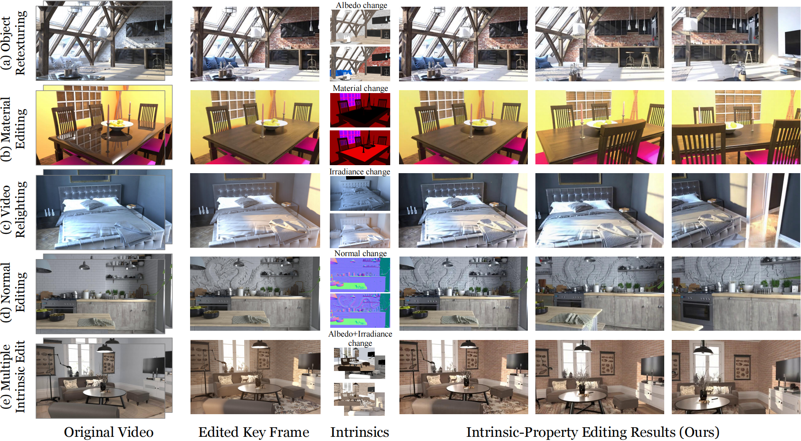
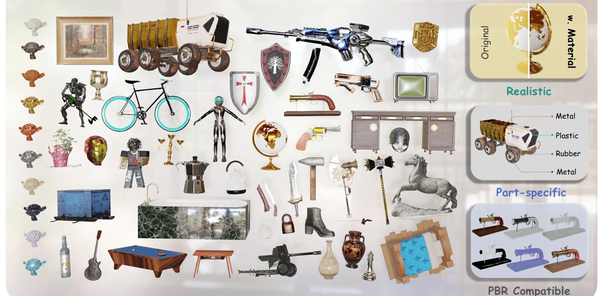
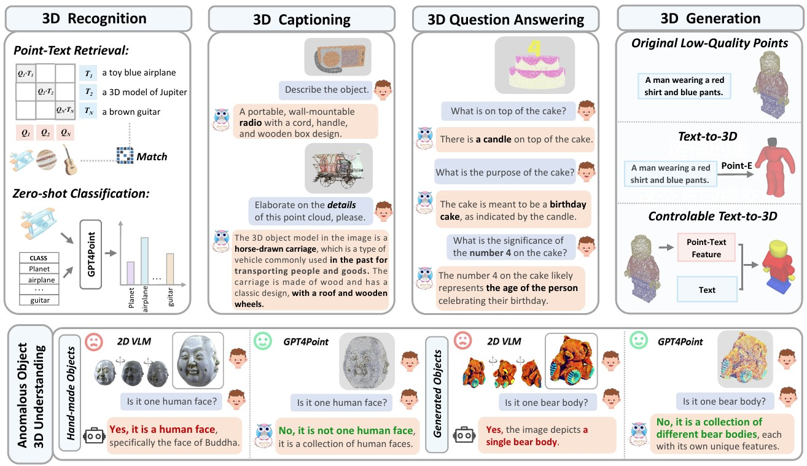
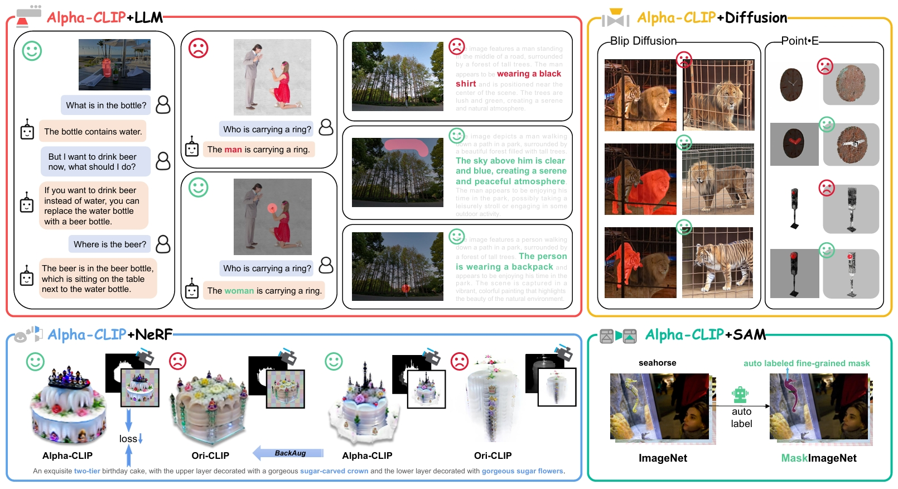

Hi👋! I am a third-year Ph.D. student at the College of Computer Science and Artificial Intelligence, Fudan University, supervised by Prof. Dahua Lin. I also work closely with Dr. Tong Wu. Prior to this, I received my Bachelor’s degree from the Artificial Intelligence, HIT in 2023.
My research interests include video generation and editing, intrinsic representations, and multimodal learning. I focus on building controllable and temporally consistent AIGC systems for video and 3D visual content. My recent work explores modeling intrinsic factors such as appearance, lighting, and materials to enable structured and interpretable visual representations.
If you are interested in academic collaboration or discussion, please feel free to contact me via email at yefang23@m.fudan.edu.cn.😊
🔥 News
-
2025.07: 🎉 Congratulations! GPT4Point++ has been accepted IEEE TPAMI.
-
2024.09: 🎉 Congratulations! One first-author paper Make-it-Real accepted by NeurIPS 2024.
-
2024.03: 🎉 Congratulations! Two first-author papers Alpha-CLIP and GPT4Point accepted by CVPR 2024.
-
2023.09: 🎓 Joined Fudan University as a Ph.D. student.
📝 Publications

V-RGBX: Video Editing with Accurate Controls over Intrinsic Properties
Ye Fang, Tong Wu, Valentin Deschaintre, Duygu Ceylan, Iliyan Georgiev, Chun-Hao Paul Huang, Yiwei Hu, Xuelin Chen, Tuanfeng Yang Wang

Make-it-Real: Unleashing Large Multimodal Model for Painting 3D Objects with Realistic Materials
Ye Fang$^*$, Zeyi Sun$^*$, Tong Wu, Jiaqi Wang, Ziwei Liu, Gordon Wetzstein, Dahua Lin

Gpt4point: A unified framework for point-language understanding and generation
Zhangyang Qi$^*$, Ye Fang$^*$, Zeyi Sun$^*$, Xiaoyang Wu, Tong Wu, Jiaqi Wang, Dahua Lin, Hengshuang Zhao

Alpha-clip: A clip model focusing on wherever you want
Zeyi Sun$^*$, Ye Fang$^*$, Tong Wu, Pan Zhang, Yuhang Zang, Shu Kong, Yuanjun Xiong, Dahua Lin, Jiaqi Wang
RelightVid: Temporal-consistent diffusion model for video relighting [Arxiv 2025]
Ye Fang$^*$, Zeyi Sun$^*$, Shangzhan Zhang, Tong Wu, Yinghao Xu, Pan Zhang, Jiaqi Wang, Gordon Wetzstein, Dahua Lin
[Project] [Paper] [Code] [Video]
GPT4Point++: Advancing Unified Point-Language Understanding and Generation [TPAMI 2025]
Zhangyang Qi, Ye Fang, Zeyi Sun, Xiaoyang Wu, Tong Wu, Jiaqi Wang, Dahua Lin, Hengshuang Zhao
Gpt4scene: Understand 3d scenes from videos with vision-language models [Arxiv 2025]
Zhangyang Qi$^*$, Zhixiong Zhang$^*$, Ye Fang, Jiaqi Wang, Hengshuang Zhao
Gemini vs GPT-4V: A Preliminary Comparison and Combination of Vision-Language Models Through Qualitative Cases [Technical Report]
Zhangyang Qi, Ye Fang, Mengchen Zhang, Zeyi Sun, Tong Wu, Ziwei Liu, Dahua Lin, Jiaqi Wang, Hengshuang Zhao
📖 Educations
- 2023.09 - Present, Ph.D. in Computer Science and Artificial Intelligence, Fudan University.
- 2019.09 - 2023.06, Bachelor in Artificial Intelligence, Harbin Institute of Technology (Yingcai Honors College).
🏅 Honors and Awards
- 2024, Qi An Xin (QiAnXin Technologies) Scholarship, Fudan University.
- 2021, Shenzhen Stock Exchange (SZSE) Enterprise Scholarship (Undergraduate).
- 2021, Gold Award (Ranked 1st Provincially), “Internet+” College Student Innovation and Entrepreneurship Competition.
- 2017, 2018, First Prize (Provincial, Twice), National High School Mathematics League (China).
🤗 Community Services
- Conference reviewer for ICML’24, NeurIPS’25, Siggraph’25, CVPR’26.
- Community: Organizer to DeepLearning-MuLi-Notes (3.7k⭐); contributor to Top-AI-Conferences-Paper-with-Code (2.7k⭐).